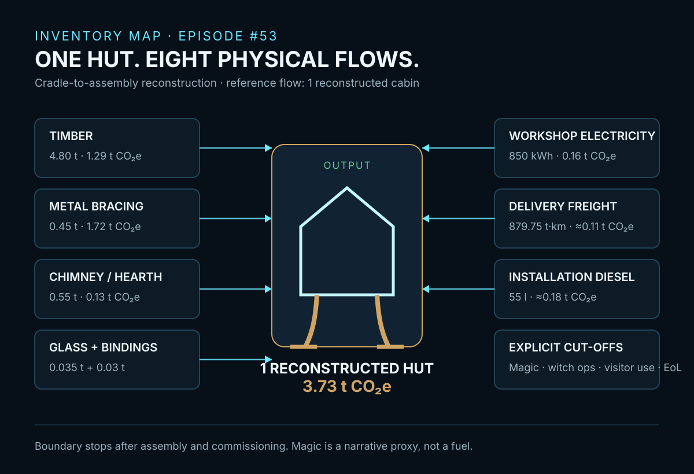
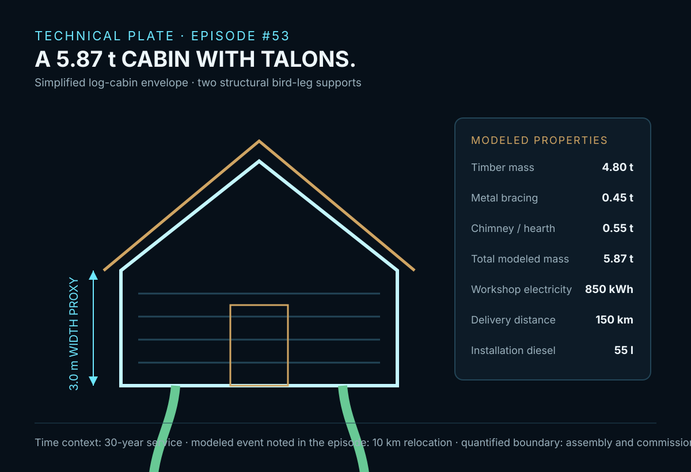
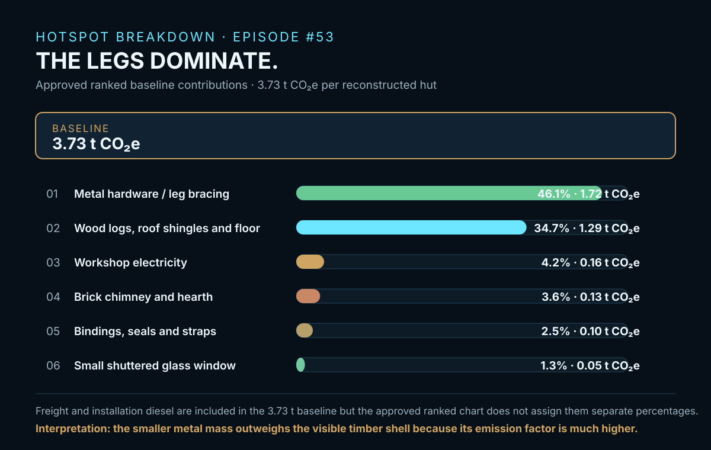

EPISODE #53 · MYTHS & LEGENDS
Baba Yaga's Hut
What is the structural footprint of a forest cabin that must stand on walking legs?
THE SUBJECT
A cabin becomes a structural machine.
The approved episode reconstructs Baba Yaga's walking forest cabin as one physical hut. Folklore supplies the form; engineering supplies the bill of materials. The reference flow is one reconstructed cabin, with a 30-year service context.
The physical proxy is a simplified 3.6 × 3.0 m log-cabin envelope supported by two structural bird legs. The modeled mass is 5.87 t: 4.80 t of timber, 0.45 t of metal bracing and hardware, 0.55 t of chimney and hearth, plus glazing and bindings.
The boundary stops after assembly and commissioning. Wood, metal, brick, glass, workshop electricity, delivery freight and installation diesel are modeled. Magic propulsion, witch operations, visitor use and end-of-life are cut off rather than assigned invented physical flows.
5.87 t modeled mass
The reconstructed hut is 3.6 × 3.0 m, with a log-cabin shell and two structural bird-leg supports.
150 km delivery
Freight activity is 879.75 t·km, with 850 kWh of workshop electricity and 55 l of installation diesel.
Main hotspot
Metal bracing and hardware contribute 1.72 t CO₂e, or 46.1% of the 3.73 t baseline.
Magic is not a fuel
The walking function is represented through physical materials and commissioning. Supernatural propulsion remains outside the quantified boundary.
VISUAL MODEL
From forest materials to a commissioned walking hut
The inventory map shows the physical flows that enter the baseline and keeps supernatural functions explicitly outside the calculation.


LIFE CYCLE INVENTORY
Eight physical flows before the hut enters use
Activity data and source-ledger factors follow the approved carousel. Where the approved source ledger does not print an exact factor, the website preserves the approved contribution and identifies the modelling basis without reconstructing a new factor.
| Stage | Component / activity | Activity data | Climate change | Modelling basis |
|---|---|---|---|---|
| Materials | Wood logs, roof shingles and floor | 4.80 t | 1.29 t CO₂e | DEFRA 2026 wood factor: 269.504 kg CO₂e/t. |
| Materials | Metal hardware and leg braces | 0.45 t | 1.72 t CO₂e | DEFRA 2026 metals factor: 3,821.949 kg CO₂e/t. |
| Materials | Brick chimney and hearth | 0.55 t | 0.13 t CO₂e | Approved material proxy; the exact factor is not printed in the carousel source ledger. |
| Materials | Small shuttered glass window | 0.035 t | 0.05 t CO₂e | Approved glass proxy; the exact factor is not printed in the carousel source ledger. |
| Materials | Bindings, seals and leather-like straps | 0.03 t | 0.10 t CO₂e | Average-plastics proxy disclosed in the approved episode. |
| Workshop | Workshop electricity | 850 kWh | 0.16 t CO₂e | DEFRA 2026 electricity full factor: 0.184 kg CO₂e/kWh. |
| Logistics | Delivery freight to forest clearing | 879.75 t·km | ≈0.11 t CO₂e | DEFRA 2026 HGV freight factor: 0.123 kg CO₂e/t·km. |
| Installation | Diesel for lifting and clearing | 55 l | ≈0.18 t CO₂e | DEFRA 2026 diesel incl. WTT factor: 3.195 kg CO₂e/l. |
Included
Cabin materials, metal leg bracing, chimney, glazing, workshop electricity, delivery and installation.
Excluded
Magic propulsion, witch operations, visitor use and end-of-life are cut off.
Model status
Narrative engineering reconstruction. Not a verified LCA or comparative assertion.
Source rule
DEFRA 2026 is prioritized; proxies are declared where exact factors do not exist.
HOTSPOT
The legs dominate.
The walking structure matters more than the wooden cabin shell: the smaller metal mass carries the largest emission factor.

Main result
3.73 t CO₂e
Baseline per reconstructed hut.
Metal structure
1.72 t CO₂e · 46.1%
Metal hardware and leg bracing are the dominant hotspot.
Timber shell
1.29 t CO₂e · 34.7%
Wood is visually dominant but second in climate contribution.
Commissioning energy
850 kWh + 55 l diesel
Workshop and installation flows remain secondary to the structural materials.
Sensitivity A · physical mass
Lean skeletal hut → 2.77 t CO₂e
Baseline hut → 3.73 t CO₂e
Iron-braced heavy hut → 5.55 t CO₂e
Less or more wood, metal and energy changes the result while the boundary remains fixed.
Sensitivity B · material source
Re-used timber + recycled metal → 1.62 t CO₂e
Baseline primary mix → 3.73 t CO₂e
High material-intensity case → 4.20 t CO₂e
The same hut tells a different story when material origin changes.
What the model tells us
The impossible is structural. Metal bracing is the largest modeled hotspot because the hut must stand on moving legs.
What remains uncertain
Mass is the largest modelling uncertainty under the frozen boundary; material sourcing is the second major sensitivity.
THE VERDICT
A moving threshold carries a structural footprint. Wood makes the cabin visible; metal makes the impossible stand.